Producción agropecuaria
Mandioca y otros rubros de autoconsumo y renta en la zona insular.
San Antonio, Paraguay
Organización de productores que defiende el trabajo rural, mejora el acceso a la producción y se prepara ante los factores climáticos.
Entidad civil sin fines de lucro. Su estatuto fue protocolizado por escritura pública N.° 19 del 10/10/2022 (Escribana Carmen Paredes Cabrera, Registro N.° 534) e inscripta en la Dirección General de los Registros Públicos en octubre de 2022.
Estamos establecidos formalmente en la zona de la Isla Ytororo, en San Antonio. Defendemos el valor del trabajo rural organizado y combinamos la experiencia del campo con la cooperación institucional para superar barreras logísticas y climáticas.
Mandioca y otros rubros de autoconsumo y renta en la zona insular.
Seguimos las variaciones atmosféricas y el caudal del río. Ver el monitor.
Los 21 socios activos avanzan de manera coordinada en las labores de cultivo y optimización de parcelas.
Registro fotográfico de la zona insular de San Antonio: parcelas, hogares y el trabajo de los socios.
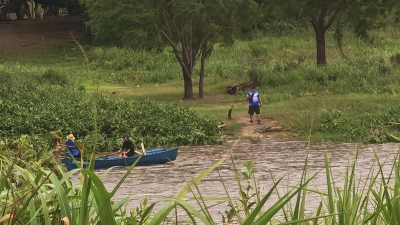
Socios preocupados por la situación de la zona.
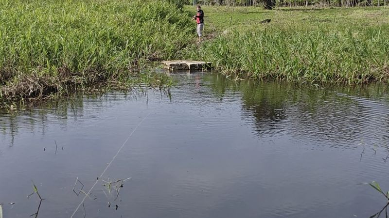
Crecida del río dentro de la plantación.
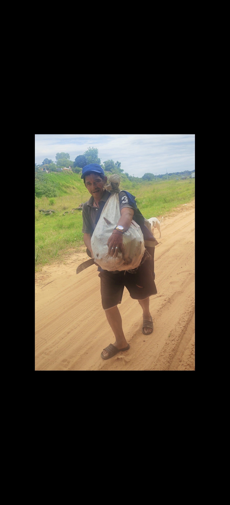
Un socio lleva su producción.
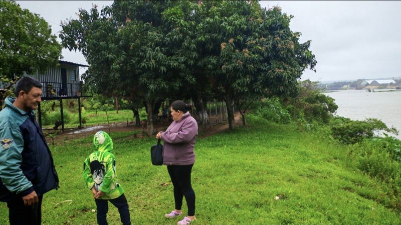
Viviendas de las familias isleñas.
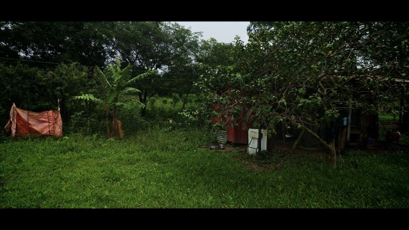
Registro fotográfico de la situación en la isla.
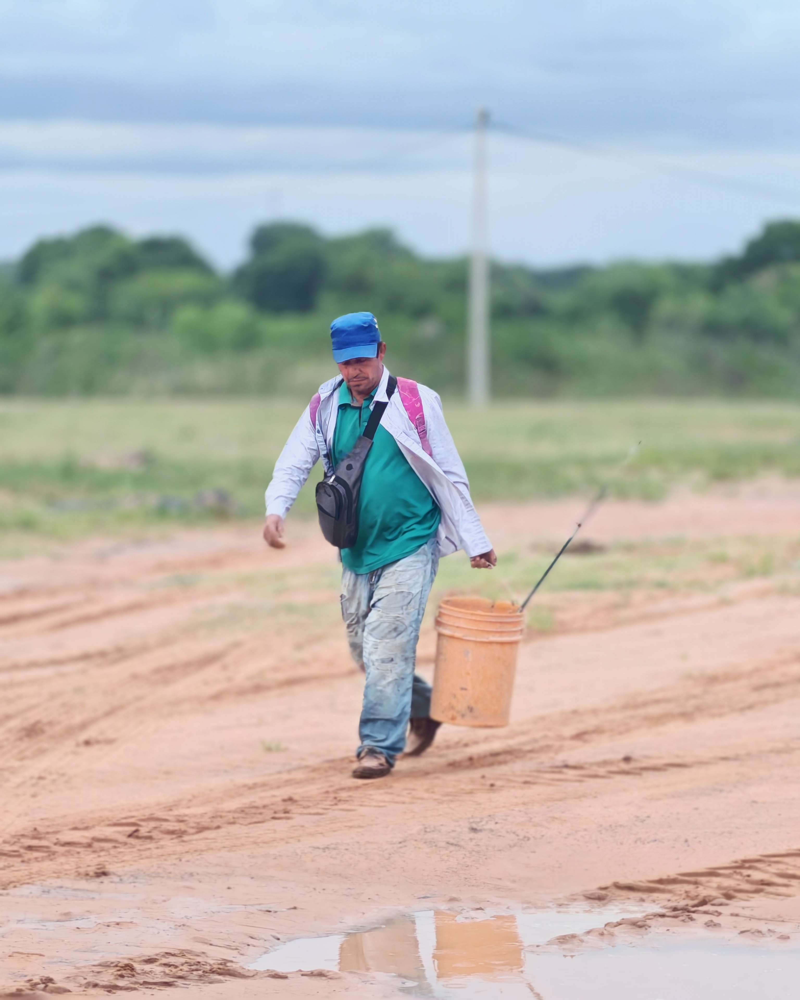
Socios trabajando en sus parcelas.
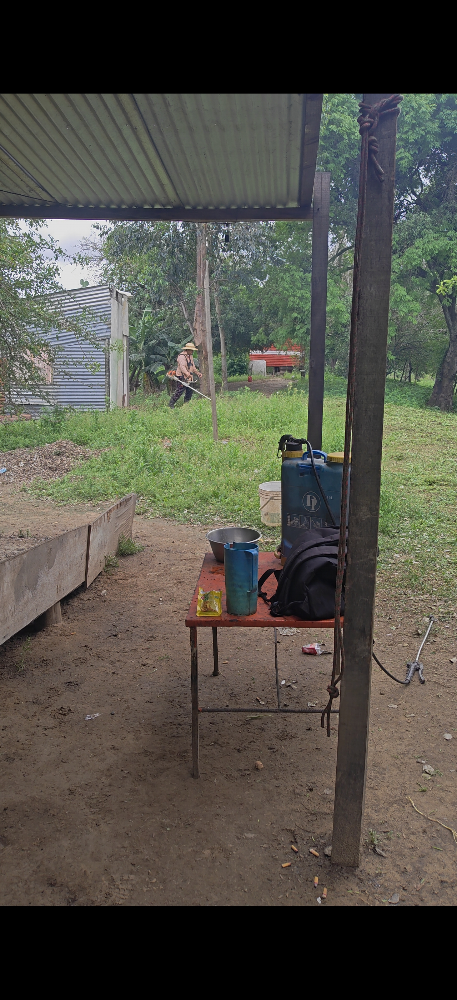
Socios limpiando la parcela.
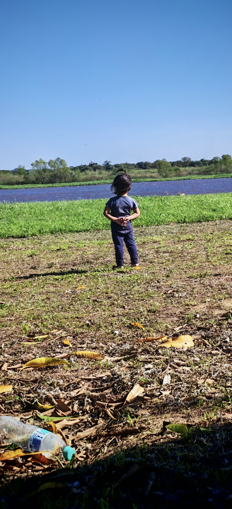
Niños en su hogar.
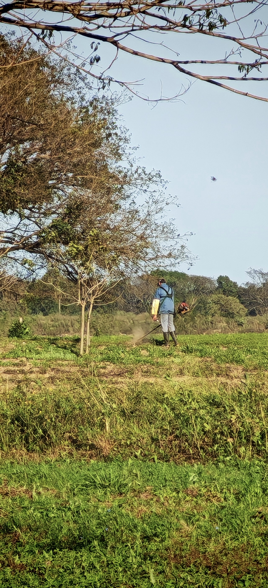
Limpieza del terreno para la plantación.
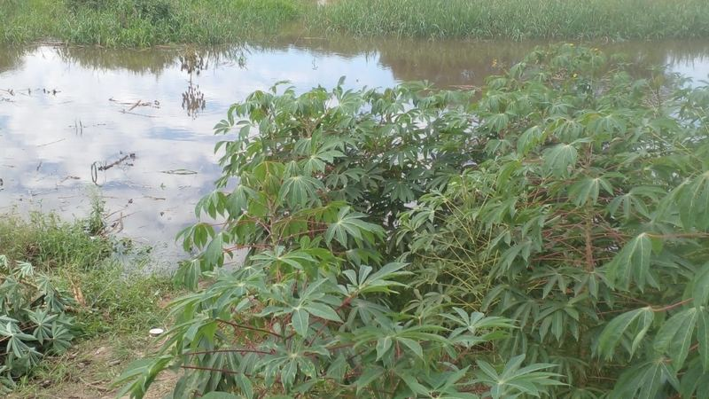
Estado de la zona en octubre de 2026.
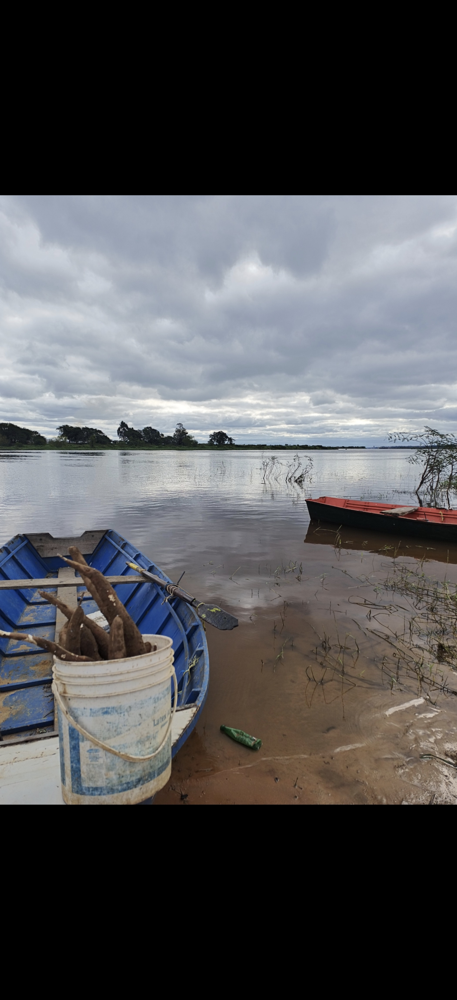
La vida en la isla.
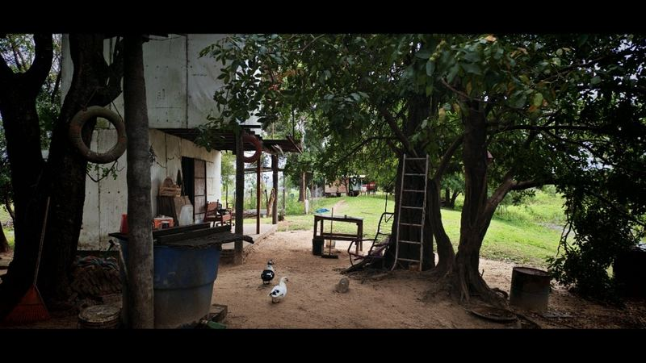
Un hogar de la isla.
Si quieres asociarte, conocer nuestras actividades o hacer una consulta general, escríbenos directamente. Respondemos con la información disponible y te indicamos los pasos a seguir.
En la zona de la Isla Ytororo, en la ciudad de San Antonio, Paraguay.
Escríbenos por WhatsApp al 0982 879-980.